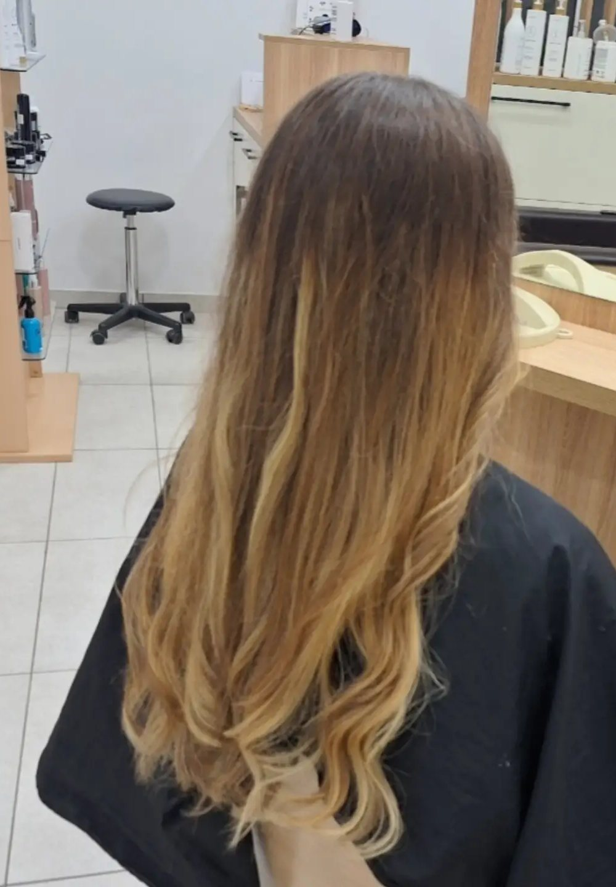
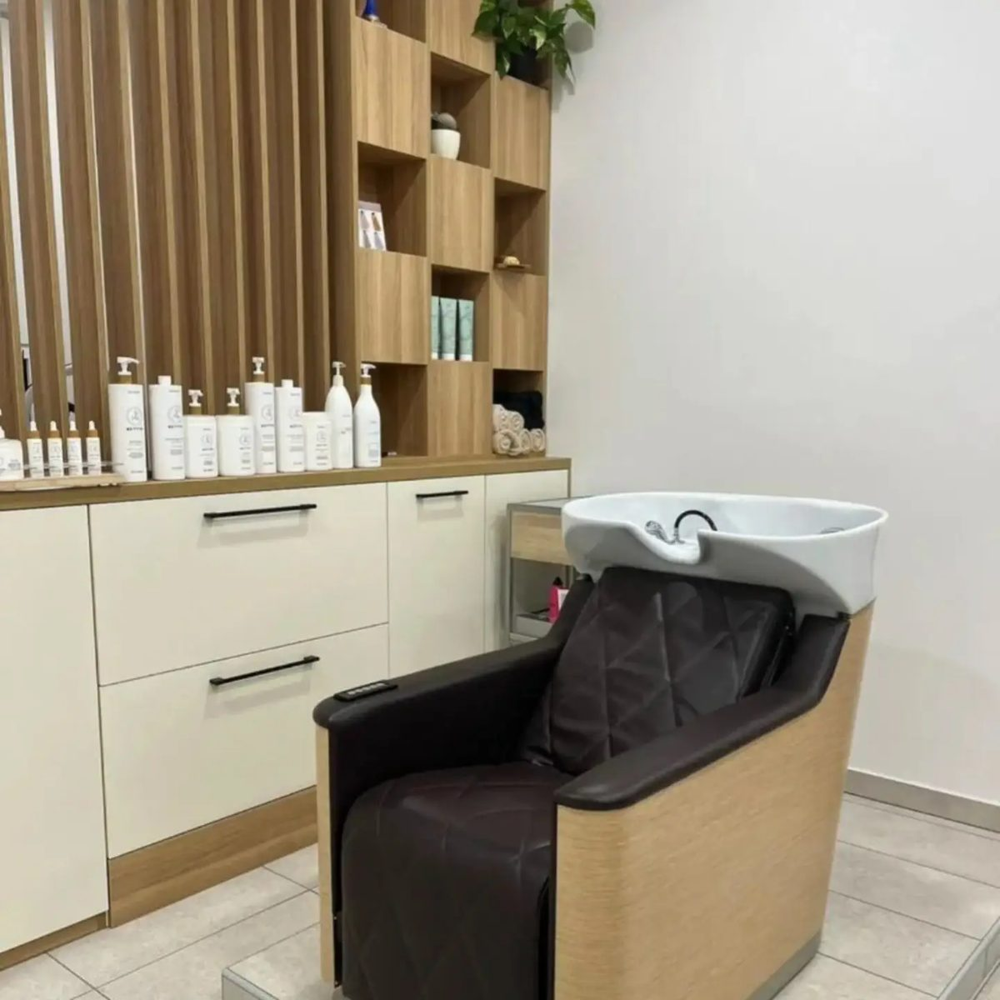
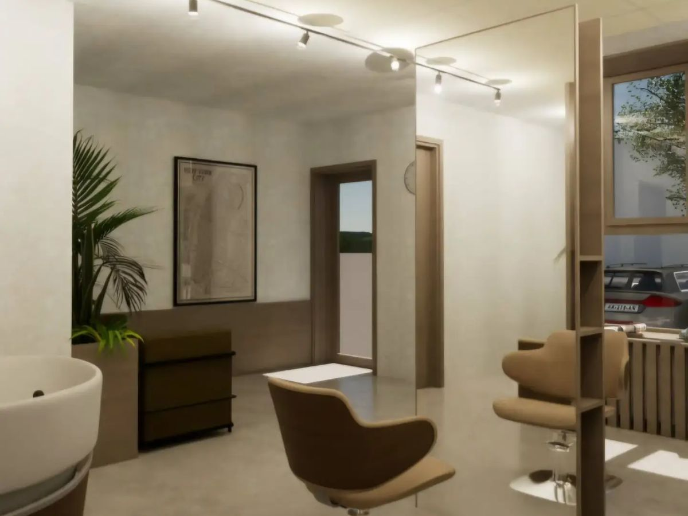
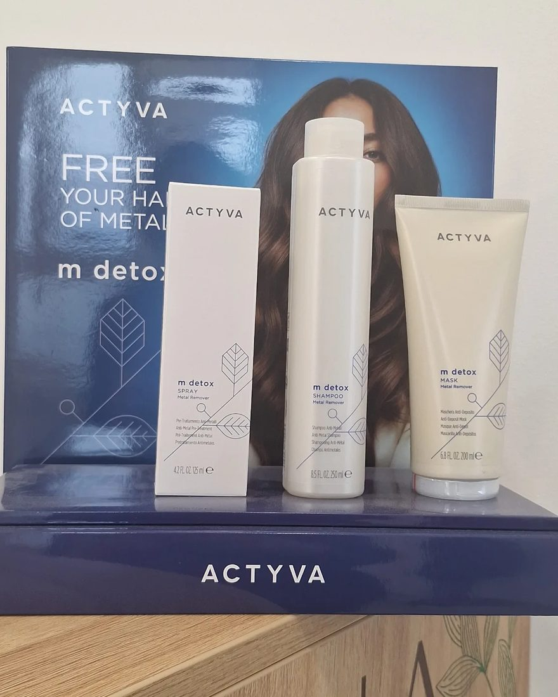
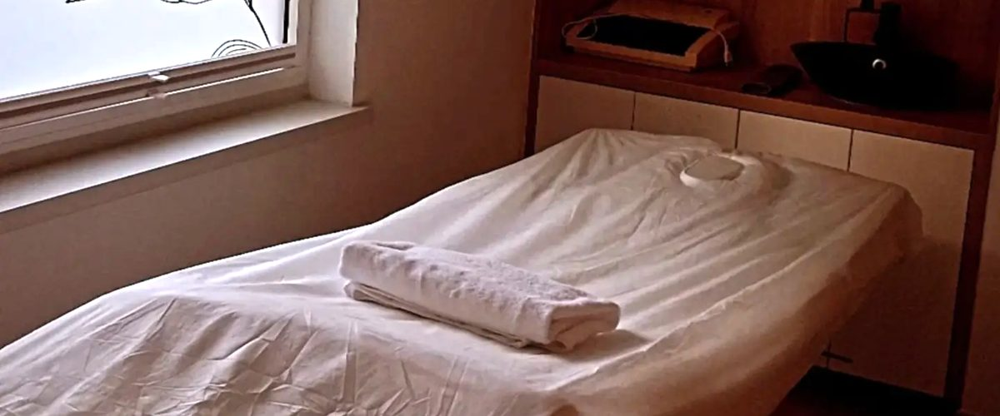

Katarina Lepotni salon
Lasje, ličenje in nohti v Šentjerneju
Frizerski salon, diagnostika lasišča in las, veganska kozmetika za lase in sprostitveno doživetje FrizeRaj.
Storitve
Vse za vašo lepoto, v enem salonu
Lasje, ličenje, nohti in sprostitev: za vse poskrbimo na enem mestu.
-
Striženje in frizure
Od vsakdanje pričeske do svečane frizure za posebne priložnosti.
-
Barvanje, prameni in balayage
Blond ne gre nikoli iz mode, jeseni pa radi posežemo po toplih rjavih odtenkih, ki se prelivajo v svetle konice.
-
Ličenje in nohti
Manikira ima v našem salonu večletno tradicijo, poskrbimo pa tudi za ličenje.
-
Diagnostika lasišča in las
Preden svetujemo nego, pogledamo, kaj lasišče in lasje zares potrebujejo.
-
Nega z vegansko kozmetiko
S pravilno nego so tudi dolgi blond lasje zdravi in sijoči. Nego opravimo v salonu ali pa vam pripravimo komplet za domov.
-
FrizeRaj
Sprostitveno doživetje v našem salonu. Opis doživetja FrizeRaj: dodamo
Cenik Cenik: dodamo
Galerija frizur
Prameni, prelivi in blond odtenki
Nekaj barv, ki so nastale v našem salonu.
Jesenski pramenčki Blond ne gre nikoli iz mode Škrlatna Dolgi blond, zdrav in sijoč Topli jesenski odtenki Blond s folijami Peščeni prameni Sijaj po negi Transformacija barve Preliv v svetle konice

O salonu
Od sanj do resničnosti
Pred petimi leti je bila to samo vizija: ideja na papirju, želja v srcu in sanje o prostoru, ki bi nekoč postal moj. Danes je to moj vsakdan.
Vsak kotiček, vsak detajl in vsaka malenkost nosijo del zgodbe, ki se je začela z eno samo sanjo. Hvaležna sem za pot, ponosna na doseženo in z velikimi sanjami za naprej.
Katarina

Nega las
Veganska kozmetika za lase
V salonu negujemo s kozmetiko Kemon Actyva. Izdelke lahko preizkusite pri nas ali pa jih odnesete domov.
-
M Detox
Vlaga, smog in kovinski mikrodelci zunaj, suh zrak zaradi ogrevanja v prostorih: vse to vpliva na lase. Linija M Detox očisti kovinske delce iz las ter tako poveča sijaj in obstojnost frizure.
-
Serum KB3
Hitra nega, preden lase oblikujemo v pričesko.
-
Komplet za domov
Vzemite si komplet za tretma in za svoje lase poskrbite v udobju domače kopalnice.
Masaže
Anin dotik
Tik pred rojstnim dnem salona se je rodilo novo sodelovanje. Lepo vabljeni, da poskusite masažo za sprostitev ali pa takrat, ko imate težave.
Naročanje na masažo: dodamo kontakt

Kontakt
Rezervirajte svoj termin
Termin si rezervirajte pravočasno, da vam lahko zagotovimo želenega.
Pokličite 041 742 919- Delovni čas
- Ponedeljek, petek8.00–15.00 Torek, sreda, četrtek13.00–20.00 Sobotapo dogovoru
- E-pošta
- katarina.kozelj2@gmail.com
- @lepotnikatarina